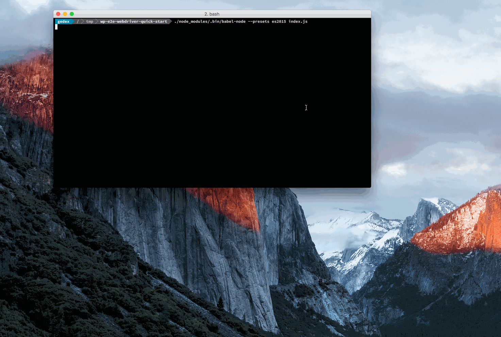

This tutorial shows you how to get up and running as quickly as possible, starting with all the tools you need.
Before you begin
Install
wp-e2e-webdriver:$ npm install wp-e2e-webdriverIf you're going to write it in ES2015 you can install
babel-cliandbabel-preset-es2015:$ npm install babel-cli babel-preset-es2015
Web page to test
You're going to test https://wp-e2e-test-form-page.herokuapp.com/index.html. This is a page that's used in helper test. If you need more example, wp-e2e-webdriver's test is a good start to look up.
Example code
This example code will open https://wp-e2e-test-form-page.herokuapp.com/index.html in Chrome, fill input named 'email' with text 'john.doe@example.com', tick a checkbox with id 'exampleCheckbox', wait 5 seconds before closing the browser.
import { By } from 'selenium-webdriver';
import { WebDriverManager, WebDriverHelper as helper } from 'wp-e2e-webdriver';
const manager = new WebDriverManager( 'chrome' );
const driver = manager.getDriver();
driver.get( 'https://wp-e2e-test-form-page.herokuapp.com/index.html' );
helper.setWhenSettable( driver, By.css( 'input[name="email"]' ), 'john.doe@example.com' );
helper.setCheckbox( driver, By.css( '#exampleCheckbox' ) );
setTimeout( () => {
manager.quitBrowser();
}, 5000 );The 5 seconds wait is just to show you whether an input is filled and the checkbox is checked.
Running the code
$ ./node_modules/.bin/babel-node --presets es2015 index.js